Turn /home/user/legal/breach_notes.txt into a deck at /home/user/legal/breach_briefing.odp: a title slide "GDPR Breach Response — Halloran & Voss" plus one slide per numbered note, each with the note's heading as title and its bullets in the body. Look up the GDPR breach notification deadline on gdpr-info.eu Article 33 and put it in the speaker notes of the title slide. Then run sha256sum on the saved file in a terminal.
{
"config": [
{
"type": "execute",
"parameters": {
"command": "mkdir -p /home/user/legal && python3 -c \"open('/home/user/legal/breach_notes.txt','w').write('''1. Incident Timeline\\n- 14 Mar 09:20 CET: helpdesk flags failed logins on client portal\\n- 14 Mar 11:05 CET: forensics confirms exfiltration of 2,140 client records\\n- 14 Mar 15:40 CET: portal isolated, credentials rotated\\n\\n2. Data Categories Affected\\n- Full names and postal addresses\\n- Case reference numbers and matter descriptions\\n- Bank details for 312 legal aid clients\\n\\n3. Regulator Contact\\n- Lead authority: Irish Data Protection Commission\\n- Draft Article 33 notification prepared by Marek Sobczak\\n- Outstanding: forensic root-cause annex from Redline Security\\n\\n4. Client Communication\\n- Tiered letters: 312 high-risk clients by registered post\\n- Remaining 1,828 clients by email, template approved by Ana Ferreira\\n- Dedicated helpline staffed 08:00-20:00 for two weeks\\n\\n5. Remediation Actions\\n- MFA enforced on all portal accounts by 21 Mar\\n- Quarterly penetration testing added to Redline contract\\n- Retention policy review for closed matters older than 6 years\\n''')\"",
"shell": true
}
},
{
"type": "launch",
"parameters": {
"command": [
"google-chrome",
"https://gdpr-info.eu/art-33-gdpr/"
]
}
},
{
"type": "open",
"parameters": {
"path": "/home/user/legal/breach_notes.txt"
}
}
],
"evaluator": {
"func": "check_include_exclude",
"result": {
"type": "vm_command_line",
"command": "echo ostg-v16",
"shell": true
},
"expected": {
"type": "rule",
"rules": {
"include": [
"__judge_decides__"
]
}
}
}
}
step 1 00:44:40
THINKINGThe task has several parts. First I need to read the source file breach_notes.txt. Let me open a terminal to read it. I see a terminal icon in the dock. Let me first read the notes file, then look up the deadline (already visible: 72 hours in Article 33), then build the ODP deck, then run sha256sum.
Let me start by opening a terminal to read the file contents. The terminal icon is in the left dock.
ACTIONI'll start by opening a terminal to read the source notes file, and I can already see Article 33 on screen states the notification deadline is "not later than 72 hours."
EXECUTED (pyautogui in VM)pyautogui.press("return")
step 5.1 00:45:08
THINKINGThe output scrolled. I can see notes 2-5 but the top (note 1) is cut off. Let me scroll up in the terminal to see the beginning, or better, maximize the terminal and re-run. Let me scroll up in the terminal window to see line 1-2.
ACTIONThe output scrolled past the top. Let me scroll up in the terminal to see the first note.
EXECUTED (pyautogui in VM)pyautogui.moveTo(480, 299)
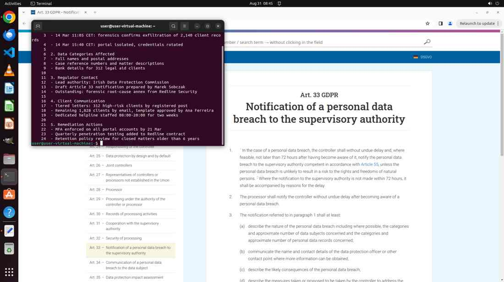
step 5.2 00:45:12
same model call as the previous action
EXECUTED (pyautogui in VM)pyautogui.scroll(3)
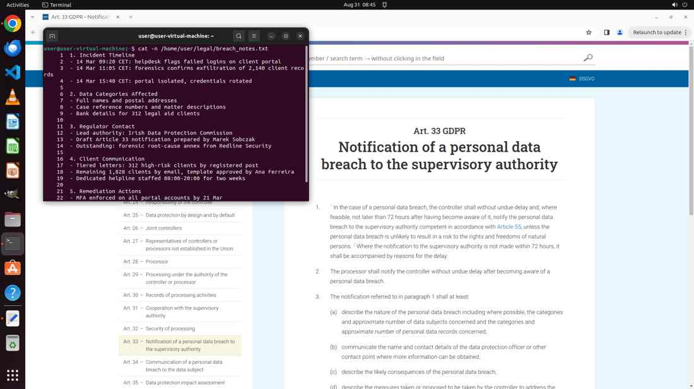
step 6 00:45:31
THINKINGNow I have the full file structure. Let me record all notes:
1. Incident Timeline
- 14 Mar 09:20 CET: helpdesk flags failed logins on client portal
- 14 Mar 11:05 CET: forensics confirms exfiltration of 2,140 client records
- 14 Mar 15:40 CET: portal isolated, credentials rotated
2. Data Categories Affected
- Full names and postal addresses
- Case reference numbers and matter descriptions
- Bank details for 312 legal aid clients
3. Regulator Contact
- Lead authority: Irish Data Protection Commission
- Draft Article 33 notification prepared by Marek Sobiczak
- Outstanding: forensic root-cause annex from RedLine Security
4. Client Communication
- Tiered letters: 312 high-risk clients by registered post
- Remaining 1,828 clients by email, template approved by Ana Ferreira
- Dedicated helpline staffed 08:00-20:00 for two weeks
5. Remediation Actions
- MFA enforced on all portal accounts by 21 Mar
- Quarterly penetration testing added to RedLine contract
- Retention policy review for closed matters older than 6 years
So 5 notes. I need to build a deck with:
- Title slide: "GDPR Breach Response — Halloran & Voss"
- Slide 2: "Incident Timeline" + 3 bullets
- Slide 3: "Data Categories Affected" + 3 bullets
- Slide 4: "Regulator Contact" + 3 bullets
- Slide 5: "Client Communication" + 3 bullets
- Slide 6: "Remediation Actions" + 3 bullets
- Speaker notes on title slide with the 72-hour deadline.
The task says to build this in a presentation app (LibreOffice Impress). The system says to use the GUI directly, not scripts/macros. So I should open Impress, use the Outline view which is the fastest way to enter title + bullets. But speaker notes in title slide need the Notes view or the notes pane.
Approach: Open LibreOffice Impress. Use View > Outline to type all slides quickly (title + bullets). Then go to slide 1 and add speaker notes via the Notes pane.
Let me first look up the deadline - already visible in the browser: Article 33(1) says "not later than 72 hours after having become aware of it". That's the deadline. I have this confirmed on screen.
Let me open Impress. I'll click the Impress icon in the dock (the orange one at position ~22,315).
ACTIONI now have the full content of all 5 numbered notes. The Article 33 deadline is clearly visible on screen: notification "not later than 72 hours after having become aware of it." Let me open LibreOffice Impress to build the deck.
EXECUTED (pyautogui in VM)pyautogui.click(32, 470)
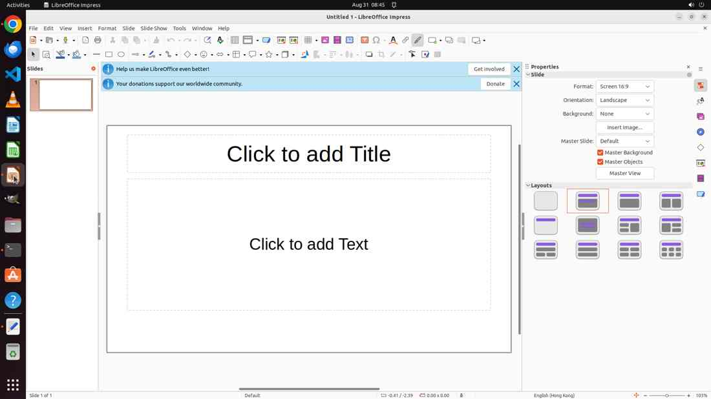
step 8 00:45:54
THINKINGImpress opened. Let me close the notification banners and switch to Outline view (View > Outline) which is the fastest way to enter titles and bullets. Let me close the two info banners first by clicking their X buttons (929,124) and (929,151).
ACTIONImpress is open. Let me close the notification banners and switch to Outline view, which is the fastest way to enter titles and bullets for all slides.
EXECUTED (pyautogui in VM)pyautogui.click(205, 125)
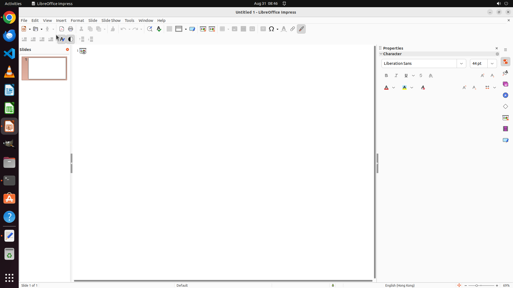
step 12 00:46:44
THINKINGNow I'm in Outline view. I need to click in the outline area to place the cursor, then type. The workflow in outline view:
- Type title text (top level)
- Press Enter → new title line
- Press Tab → demote to bullet
- Type bullet
- Enter, type next bullet
- Enter, Shift+Tab → promote back to title level for next slide
Let me click into the outline area first (around 300,128). Then type the whole content with tab/enter keys.
I need to be careful with the em-dash in the title "GDPR Breach Response — Halloran & Voss". Typing "—" via type should work. Let me use the actual em dash character.
Let me plan the typing sequence carefully. I'll click at start of outline, then:
Title: GDPR Breach Response — Halloran & Voss
Enter
Tab
Incident Timeline
Enter
Tab
14 Mar 09:20 CET: helpdesk flags failed logins on client portal
Enter
14 Mar 11:05 CET: forensics confirms exfiltration of 2,140 client records
Enter
14 Mar 15:40 CET: portal isolated, credentials rotated
Enter
Shift+Tab
Data Categories Affected
Enter
Tab
Full names and postal addresses
Enter
Case reference numbers and matter descriptions
Enter
Bank details for 312 legal aid clients
Enter
Shift+Tab
Regulator Contact
Enter
Tab
Lead authority: Irish Data Protection Commission
Enter
Draft Article 33 notification prepared by Marek Sobiczak
Enter
Outstanding: forensic root-cause annex from RedLine Security
Enter
Shift+Tab
Client Communication
Enter
Tab
Tiered letters: 312 high-risk clients by registered post
Enter
Remaining 1,828 clients by email, template approved by Ana Ferreira
Enter
Dedicated helpline staffed 08:00-20:00 for two weeks
Enter
Shift+Tab
Remediation Actions
Enter
Tab
MFA enforced on all portal accounts by 21 Mar
Enter
Quarterly penetration testing added to RedLine contract
Enter
Retention policy review for closed matters older than 6 years
I'll do this as a sequence of type and key actions in one batch. I need to click first to focus.
One concern: autocorrect might change things, e.g. the "—" and hyphen to en-dash. But that should be fine. Also "08:00-20:00" hyphen might autocorrect to en-dash. That's acceptable but let me keep it as in original text. Actually the original uses "08:00-20:00". Autocorrect could turn it into an en-dash. This is a minor cosmetic issue; the content is still there. I'll accept it.
Also "2,140" and "1,828" - fine.
Let me click into the outline area first.
ACTIONNow I'm in Outline view. Let me click into the outline area and type the title slide and all notes. I'll build the full structure using Tab (demote to bullet) and Shift+Tab (promote to new title).
EXECUTED (pyautogui in VM)pyautogui.click(599, 191)
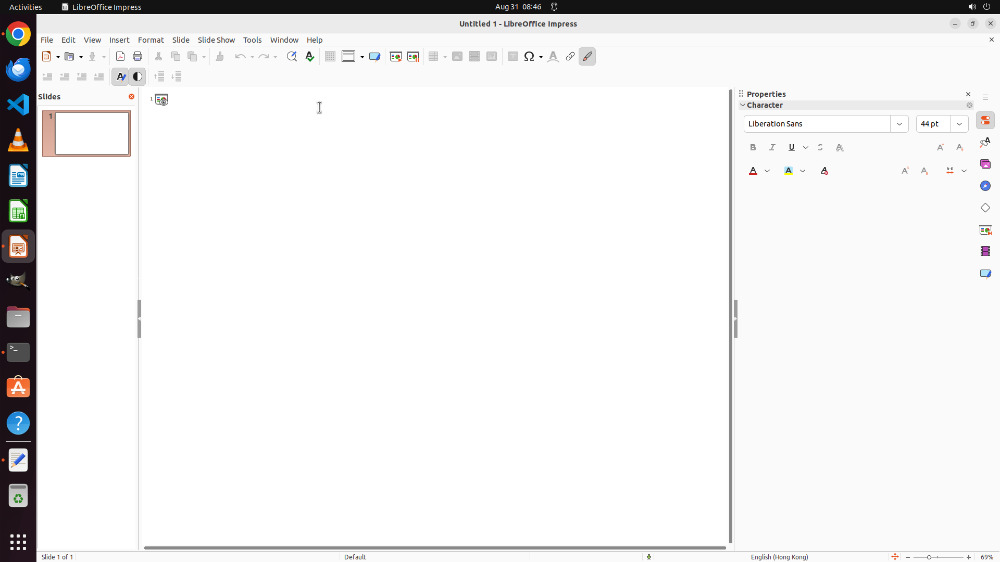
step 13 00:47:18
THINKINGThe cursor is now in the outline. Let me type the title first. I'll type the title, then use Enter + Tab to go to bullets. I'll batch this. To be safe with the em-dash, I'll type it directly.
Let me build the whole thing as one long batch of type/key actions. I'll structure it:
1. type title
2. key Return
3. key Tab (demote to bullet level)
4. type note 1 title "Incident Timeline"
5. key Return
6. key Tab (demote to bullet)
7. type bullet 1
8. key Return
9. type bullet 2
10. key Return
11. type bullet 3
12. key Return
13. key shift+Tab (promote to title level) → now this becomes note 2 title
14. type "Data Categories Affected"
... etc.
Wait - after promoting back to title with Shift+Tab, the current line becomes a new title. Then I press Enter to make a new title line, Tab to demote, type bullets. Let me be careful with the order.
The pattern for each note slide:
- (currently on a new title line at title level)
- type "<Note heading>"
- Enter (new title line)
- Tab (demote to bullet level 1)
- type bullet1
- Enter (new bullet)
- type bullet2
- Enter
- type bullet3
- Enter (new bullet)
- Shift+Tab (promote to title level → new slide)
- type "<next heading>"
And the very first line: I type the title (slide 1), Enter, Tab, then type note 1 heading as first title? No wait.
Actually the title slide is separate. Let me re-plan:
Line 1 (title level): "GDPR Breach Response — Halloran & Voss" ← slide 1 title
Enter → new title line
Tab → demote to bullet (would make this a bullet on slide 1, but I don't want bullets on the title slide)
Hmm. The title slide should have no bullets. So after typing the title slide title, I press Enter (new title line) and then type the next heading directly as a title (no Tab). That creates slide 2.
So:
1. type "GDPR Breach Response — Halloran & Voss"
2. Enter → new title line (slide 2)
3. type "Incident Timeline" (slide 2 title)
4. Enter → new title line
5. Tab → demote to bullet (slide 2 bullet)
6. type "14 Mar 09:20 CET: helpdesk flags failed logins on client portal"
7. Enter → new bullet
8. type "14 Mar 11:05 CET: forensics confirms exfiltration of 2,140 client records"
9. Enter
10. type "14 Mar 15:40 CET: portal isolated, credentials rotated"
11. Enter → new bullet
12. Shift+Tab → promote to title (slide 3)
13. type "Data Categories Affected"
14. Enter
15. Tab → demote to bullet
16. type "Full names and postal addresses"
17. Enter
18. type "Case reference numbers and matter descriptions"
19. Enter
20. type "Bank details for 312 legal aid clients"
21. Enter
22. Shift+Tab → promote to title (slide 4)
23. type "Regulator Contact"
24. Enter
25. Tab
26. type "Lead authority: Irish Data Protection Commission"
27. Enter
28. type "Draft Article 33 notification prepared by Marek Sobiczak"
29. Enter
30. type "Outstanding: forensic root-cause annex from RedLine Security"
31. Enter
32. Shift+Tab (slide 5)
33. type "Client Communication"
34. Enter
35. Tab
36. type "Tiered letters: 312 high-risk clients by registered post"
37. Enter
38. type "Remaining 1,828 clients by email, template approved by Ana Ferreira"
39. Enter
40. type "Dedicated helpline staffed 08:00-20:00 for two weeks"
41. Enter
42. Shift+Tab (slide 6)
43. type "Remediation Actions"
44. Enter
45. Tab
46. type "MFA enforced on all portal accounts by 21 Mar"
47. Enter
48. type "Quarterly penetration testing added to RedLine contract"
49. Enter
50. type "Retention policy review for closed matters older than 6 years"
This is the last line, so no trailing Enter needed.
One concern: autocorrect turning the em dash. I'll type "—" directly. Another concern: the colon in "09:20" is fine. The "2,140" fine.
Let me batch this entire sequence. It's long but predictable. I'll put it all in one tool call.
ACTIONThe cursor is in the outline. Now I'll type the full deck structure in one batch: title slide, then each note heading as a title with its bullets, using Tab to demote to bullet level and Shift+Tab to promote to a new slide title.
EXECUTED (pyautogui in VM)pyautogui.typewrite("GDPR Breach Response — Halloran & Voss")
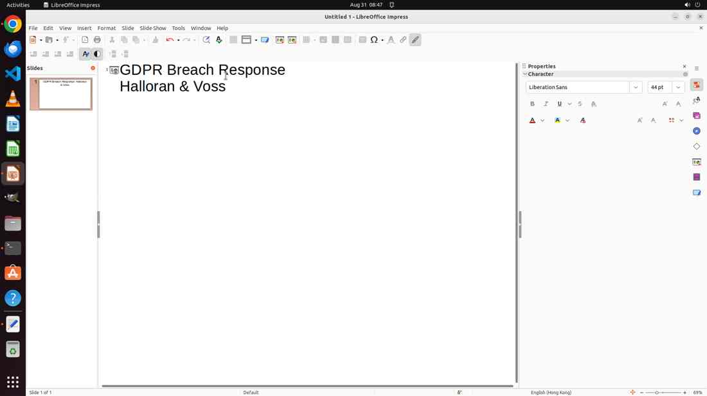
step 14 00:47:34
THINKINGThe title displays "GDPR Breach Response Halloran & Voss" - I'm concerned the em dash "—" may not have been rendered/typed. Looking at the text it shows "GDPR Breach Response" on line 1 and "Halloran & Voss" on line 2, with no visible dash between "Response" and "Halloran". The em dash might have been dropped by the type action, or it wrapped. Actually looking carefully, there's no em dash visible. The line break is just word wrap.
Hmm, the em dash may have been lost. Let me verify by checking - the text reads "GDPR Breach Response Halloran & Voss". The em dash is missing. I need to check this. It's possible the "—" character wasn't typed properly.
Let me continue building the rest first, then I'll verify and fix the title's em dash. Actually, it's better to fix it now while I know the state. But the cursor is at the end of the title. If I click into it I can fix.
Actually, let me just continue with the outline entry first, then verify everything at the end and fix the em dash. But it's risky to lose track. Let me handle the em dash now: I'll continue typing from here. The cursor is at the end of "Voss".
Actually the safest approach: continue building all slides, then at the end review the outline screenshot and fix the missing em dash by clicking between "Response" and "Halloran".
Let me proceed with the rest of the outline now. I'll batch: Enter, then "Incident Timeline", Enter, Tab, bullets, etc.
ACTIONThe title shows but the em dash between "Response" and "Halloran" appears to be missing. I'll continue building the rest of the slides now, then fix the title's em dash afterward. Let me enter the first note's heading and bullets.
EXECUTED (pyautogui in VM)pyautogui.press("return")
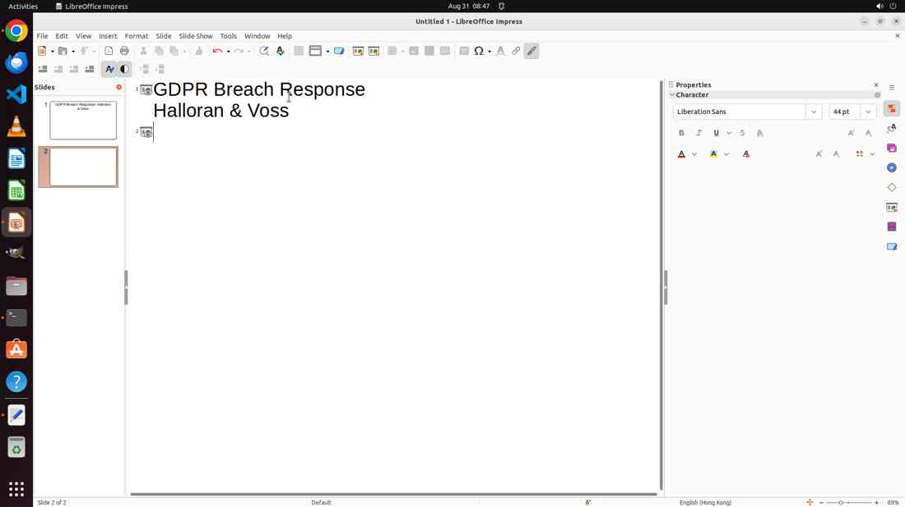
step 15 00:47:50
THINKINGSlide 2 created, cursor at title level of slide 2. Now I'll type note 1's heading and its 3 bullets. Pattern: type heading, Enter, Tab, bullet, Enter, bullet, Enter, bullet. I'll batch note 1 fully.
ACTIONSlide 2 is created. Now let me type note 1's heading and its bullets in one batch.
EXECUTED (pyautogui in VM)pyautogui.typewrite("Incident Timeline")
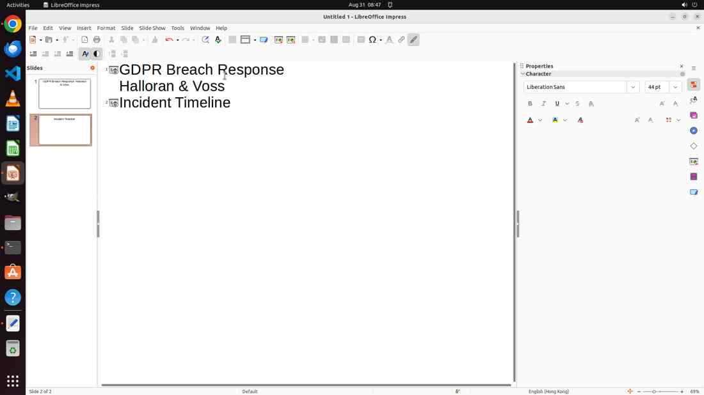
step 16 00:48:02
THINKINGNow I'll add the 3 bullets. Enter, Tab (demote), type bullet1, Enter, bullet2, Enter, bullet3. I'll batch all three bullets with the intervening keys.
ACTIONNow let me add the three bullets for note 1: Enter, Tab to demote, then each bullet.
EXECUTED (pyautogui in VM)pyautogui.press("return")
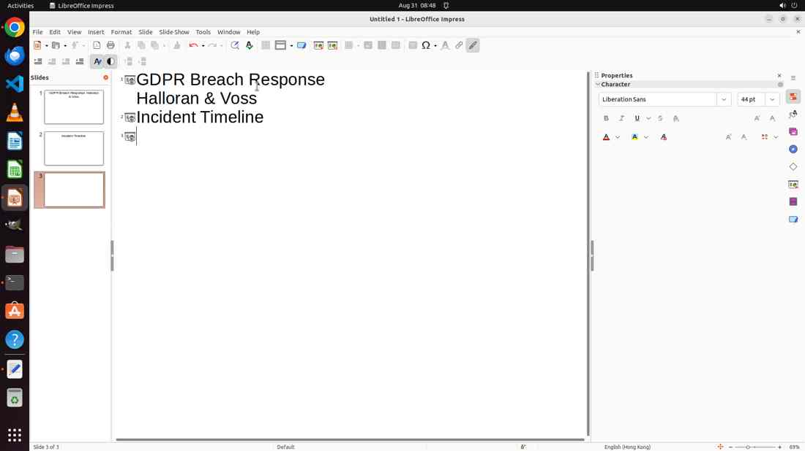
step 17 00:48:13
THINKINGEnter created a new slide 3 (title level). Now I press Tab to demote this line into a bullet under slide 2 (Incident Timeline). After Tab, the line becomes a bullet on slide 2, and slide 3 disappears. Then I type bullet 1. Let me do: Tab, type bullet1, Enter, type bullet2, Enter, type bullet3. I'll batch these.
THINKINGTab demoted it to a bullet under "Incident Timeline" (slide 2). Slide count back to 2. Now I'll type the 3 bullets. I can batch: type bullet1, Enter, type bullet2, Enter, type bullet3. Then I need to promote to next title: Enter, Shift+Tab, type next heading, etc.
Let me batch the three bullets for note 1.
ACTIONNow the line is a bullet under "Incident Timeline." Let me type all three bullets for note 1.
TOOL CALL<tool_call>
<function=computer_use>
<parameter=action>
type
</parameter>
<parameter=text>
14 Mar 09:20 CET: helpdesk flags failed logins on client portal
</parameter>
</function>
</tool_call>
EXECUTED (pyautogui in VM)pyautogui.typewrite("14 Mar 09:20 CET: helpdesk flags failed logins on client portal")
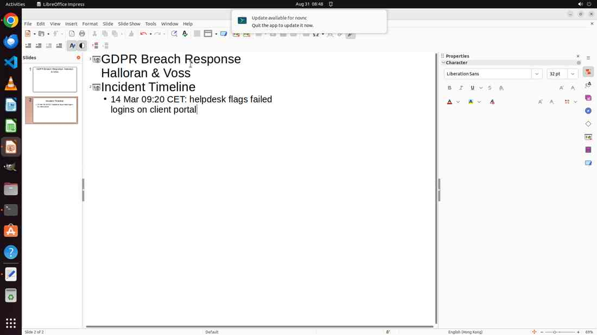
step 19 00:48:47
THINKINGBullet 1 typed correctly. There's a system notification "Update available for novnc" popping up at top - it's a distraction; I'll ignore it, it should disappear.
Now let me continue. The pattern is now established and reliable, so I can batch the remaining bullets and transitions more aggressively. I'll type: Enter, bullet2, Enter, bullet3, Enter, Shift+Tab, then next heading "Data Categories Affected", Enter, Tab, then its 3 bullets, etc.
But I should be cautious about batching too much given autocorrect quirks. However the typing has been reliable. Let me batch a reasonable chunk: the rest of note 1's bullets plus transition to note 2 heading and its bullets. Actually, let me batch note1 remaining bullets + note2 fully. That's a good size.
Sequence from current cursor (end of bullet1 on slide 2):
- Return
- type "14 Mar 11:05 CET: forensics confirms exfiltration of 2,140 client records"
- Return
- type "14 Mar 15:40 CET: portal isolated, credentials rotated"
- Return
- key shift+Tab (promote to title → slide 3)
- type "Data Categories Affected"
- Return
- key Tab (demote to bullet)
- type "Full names and postal addresses"
- Return
- type "Case reference numbers and matter descriptions"
- Return
- type "Bank details for 312 legal aid clients"
That's a good batch. Let me do it.
ACTIONBullet 1 is correct. The popup is just a system update notice I'll ignore. Now let me batch the rest of note 1's bullets and all of note 2 (heading + 3 bullets).
EXECUTED (pyautogui in VM)pyautogui.press("return")
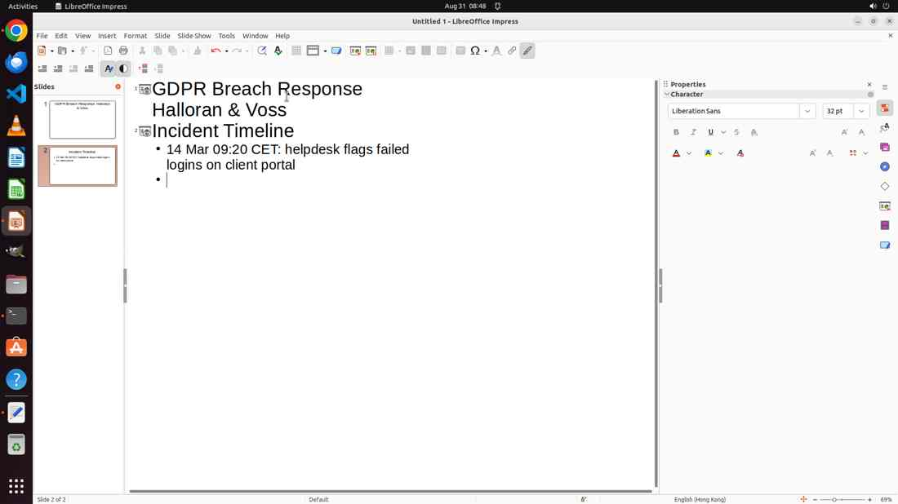
step 20 00:49:03
THINKINGNew bullet ready. The typing has been reliable. Now I'll batch aggressively: type bullet2, Return, type bullet3, Return, shift+Tab, type note2 heading, Return, Tab, type its 3 bullets. Let me do this in one big batch.
ACTIONNow I'll batch the remaining bullets of note 1 and all of note 2 in one sequence.
TOOL CALL<tool_call>
<function=computer_use>
<parameter=action>
type
</parameter>
<parameter=text>
14 Mar 11:05 CET: forensics confirms exfiltration of 2,140 client records
</parameter>
</function>
</tool_call>
EXECUTED (pyautogui in VM)pyautogui.typewrite("14 Mar 11:05 CET: forensics confirms exfiltration of 2,140 client records")
step 21 00:49:15
THINKINGGood, bullet 2 is correct. Now let me batch a large sequence: bullet3, then transition to note 2 heading + its 3 bullets. I'm confident in the pattern now.
ACTIONBullet 2 is correct. Now I'll batch bullet 3 plus the full transition into note 2 (heading + 3 bullets).
EXECUTED (pyautogui in VM)pyautogui.press("return")
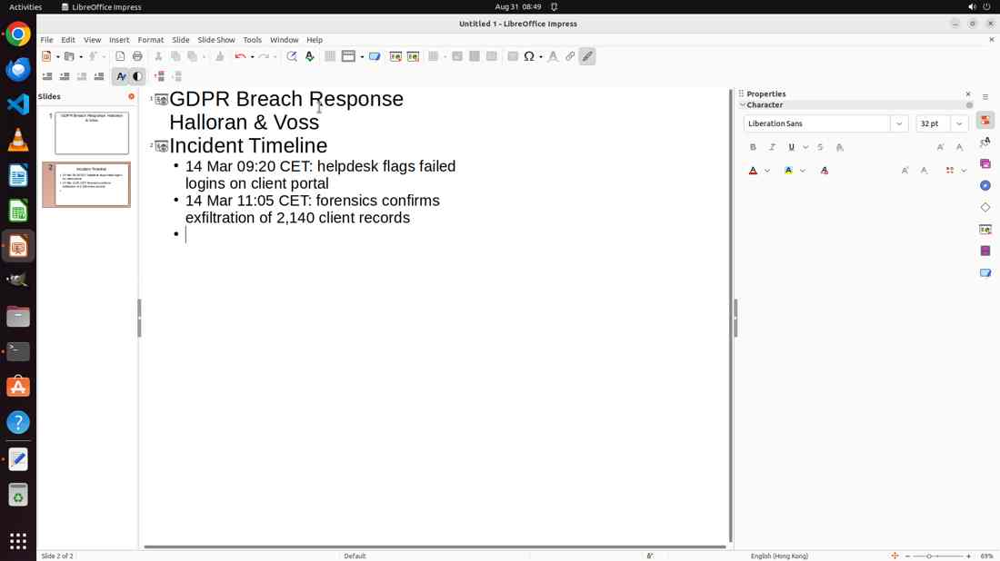
step 22 00:49:25
THINKINGNew bullet ready. Now I'll batch a large predictable sequence: type bullet3, Return, shift+Tab, type "Data Categories Affected", Return, Tab, type 3 bullets. Let me do it all in one tool call since the pattern is reliable.
ACTIONNow I'll batch bullet 3 and the entire note 2 (heading + 3 bullets) in one sequence.
TOOL CALL<tool_call>
<function=computer_use>
<parameter=action>
type
</parameter>
<parameter=text>
14 Mar 15:40 CET: portal isolated, credentials rotated
</parameter>
</function>
</tool_call>
EXECUTED (pyautogui in VM)pyautogui.typewrite("14 Mar 15:40 CET: portal isolated, credentials rotated")
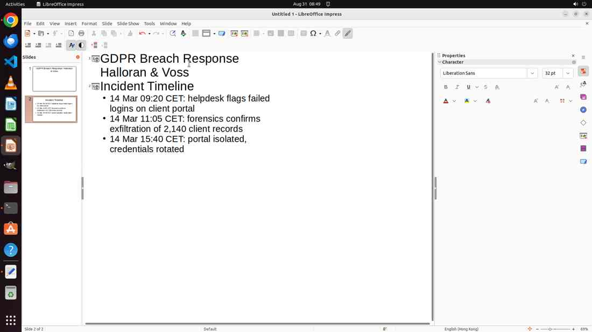
step 23 00:49:36
THINKINGNote 1 is complete with all 3 bullets correct. Now I'll transition to note 2: Return, shift+Tab (promote to title), type "Data Categories Affected", Return, Tab, then 3 bullets. I'll batch this whole sequence since the pattern is reliable.
ACTIONNote 1 is complete. Now I'll batch the full transition to note 2: new title line, heading, and its three bullets.
EXECUTED (pyautogui in VM)pyautogui.press("return")
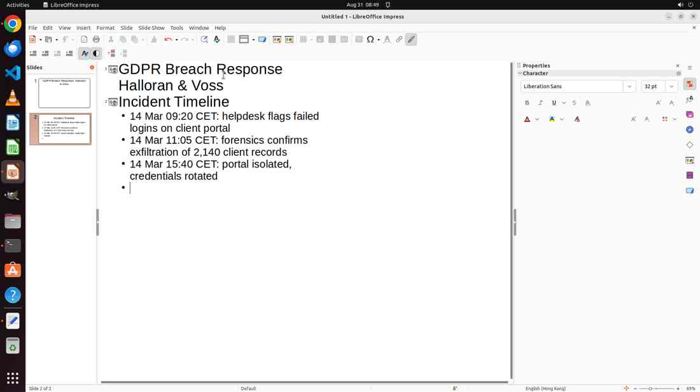
step 24 00:49:47
THINKINGNow I'm on a new bullet line. I need to promote it to a title (shift+Tab) to create slide 3. Then type "Data Categories Affected". Let me batch: shift+Tab, type heading, Return, Tab, then 3 bullets. This is a fully predictable sequence.
ACTIONNow I'll promote to a new slide title and batch all of note 2 in one sequence.
EXECUTED (pyautogui in VM)pyautogui.hotkey("shift", "tab")
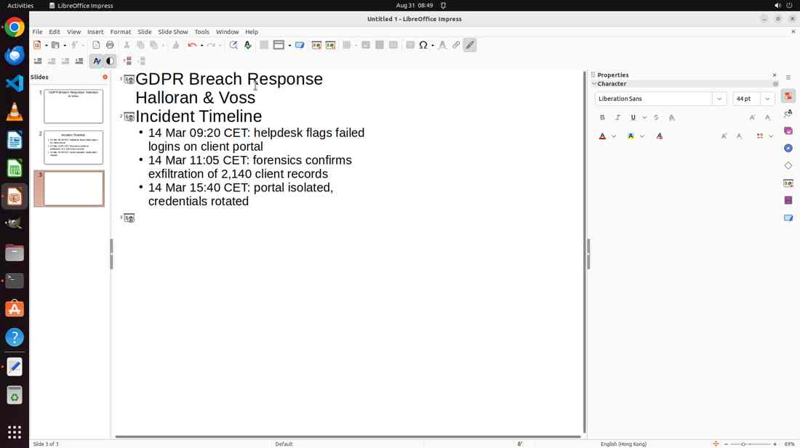
step 25 00:49:58
THINKINGSlide 3 title line is ready (44pt = title level). Now I'll type the heading, then Return, Tab, and 3 bullets. This is fully predictable. Let me batch the whole note 2 into one tool call using multiple type/key actions.
ACTIONSlide 3 title line is ready. Now I'll batch the entire note 2 (heading + 3 bullets) in one tool call.
TOOL CALL<tool_call>
<function=computer_use>
<parameter=action>
type
</parameter>
<parameter=text>
Data Categories Affected
</parameter>
</function>
</tool_call>
EXECUTED (pyautogui in VM)pyautogui.typewrite("Data Categories Affected")
step 26 00:50:12
THINKING"Data Categories Affected" is set as slide 3's title. Now I'll add its 3 bullets. I'm confident in the pattern, so I'll batch: Return, Tab, type bullet1, Return, type bullet2, Return, type bullet3. Let me do all of this in one tool call.
ACTIONNow I'll batch note 2's three bullets in one sequence.
EXECUTED (pyautogui in VM)pyautogui.press("return")
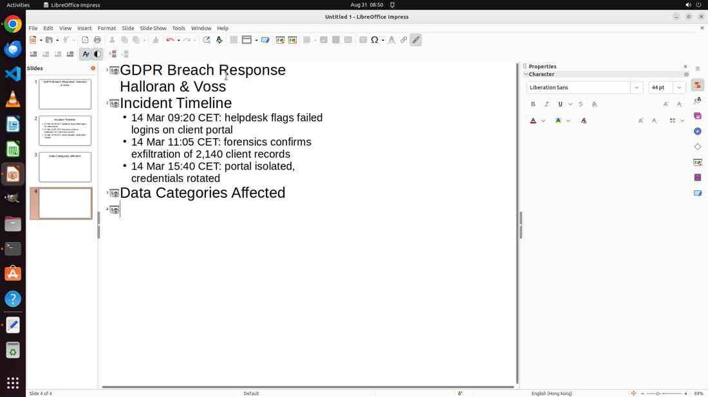
step 27 00:50:27
THINKINGIt created slide 4 (new title). I need to Tab to demote it to a bullet under "Data Categories Affected". Then type the 3 bullets. Let me batch: Tab, type bullet1, Return, type bullet2, Return, type bullet3. I'll do it in one call.
ACTIONNow I'll demote to bullet level and type all three bullets for note 2 in one batch.
THINKINGNow it's a bullet under "Data Categories Affected" (back to slide 3 of 3, 32pt). Now I'll type all three bullets. Since the pattern is reliable, I'll batch the three bullets with their intervening Returns in one tool call.
ACTIONNow the bullet level is set. I'll type all three bullets for note 2 in one batch.
TOOL CALL<tool_call>
<function=computer_use>
<parameter=action>
type
</parameter>
<parameter=text>
Full names and postal addresses
</parameter>
</function>
</tool_call>
EXECUTED (pyautogui in VM)pyautogui.typewrite("Full names and postal addresses")
step 29 00:50:57
THINKINGGood. Now I'll continue with the remaining two bullets for note 2 and then transition to note 3. The pattern is very reliable now. Let me batch more aggressively: Return, type bullet2, Return, type bullet3, Return, shift+Tab, type "Regulator Contact", Return, Tab, type 3 bullets of note 3.
Actually let me be a bit more conservative and batch note 2 remaining bullets + transition into note 3 heading + its bullets. That's a big but predictable chunk. Let me do it in one tool call with multiple actions.
ACTIONThe pattern is reliable. Now I'll batch the remaining two bullets of note 2 and all of note 3 (heading + 3 bullets) in one sequence.
EXECUTED (pyautogui in VM)pyautogui.press("return")
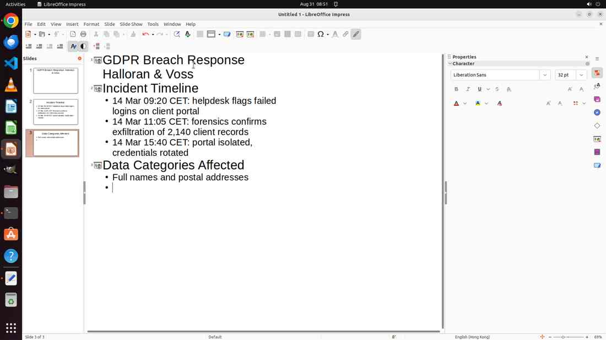
step 30 00:51:12
THINKINGI'm now on a new bullet line. I'll batch the rest: type bullet2, Return, type bullet3, Return, shift+Tab, type "Regulator Contact", Return, Tab, type 3 bullets. This is a fully predictable multi-action sequence. Let me do it all in one tool call.
ACTIONNow I'll batch the remaining note 2 bullets and all of note 3 in one sequence.
TOOL CALL<tool_call>
<function=computer_use>
<parameter=action>
type
</parameter>
<parameter=text>
Case reference numbers and matter descriptions
</parameter>
</function>
</tool_call>
EXECUTED (pyautogui in VM)pyautogui.typewrite("Case reference numbers and matter descriptions")
step 31 00:51:28
THINKINGGood. Now the last bullet of note 2, then transition to note 3. I'll batch: Return, type bullet3, Return, shift+Tab, type "Regulator Contact", Return, Tab, type 3 bullets of note 3. I'll do all in one tool call to save round trips.
ACTIONNow I'll batch note 2's last bullet and all of note 3 (heading + 3 bullets) in one sequence.
EXECUTED (pyautogui in VM)pyautogui.press("return")
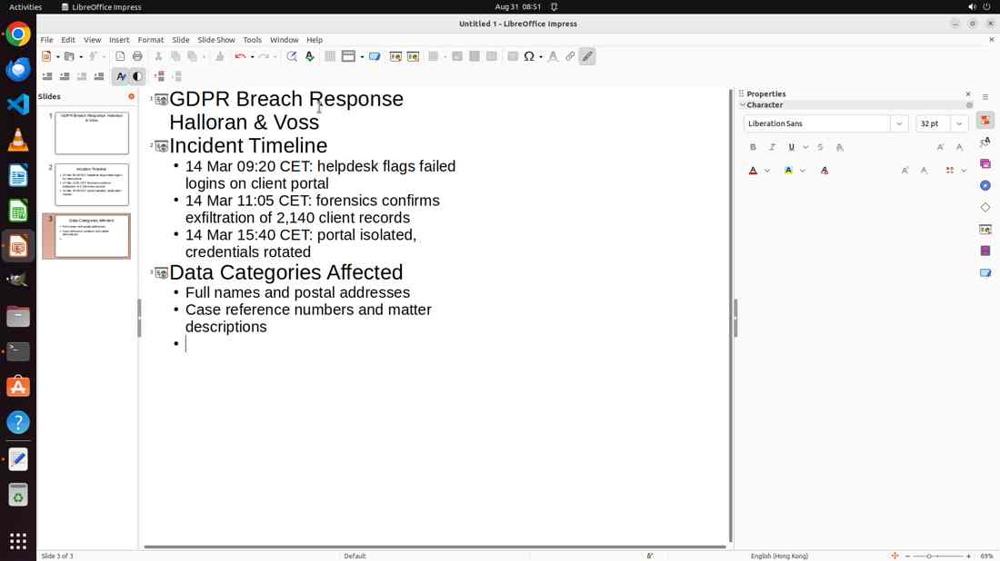
step 32 00:51:37
THINKINGNow I'm on a new bullet. Let me batch the rest of note 2's last bullet and the transition to note 3. I'll do: type bullet3, Return, shift+Tab, type "Regulator Contact", Return, Tab, type 3 bullets. All in one tool call.
ACTIONNow I'll batch note 2's final bullet and the full note 3 (heading + 3 bullets) in one sequence.
TOOL CALL<tool_call>
<function=computer_use>
<parameter=action>
type
</parameter>
<parameter=text>
Bank details for 312 legal aid clients
</parameter>
</function>
</tool_call>
EXECUTED (pyautogui in VM)pyautogui.typewrite("Bank details for 312 legal aid clients")
step 33 00:51:47
THINKINGNote 2 is complete. Now transition to note 3. I'll batch: Return, shift+Tab, type "Regulator Contact", Return, Tab, then its 3 bullets. I'll do the whole thing in one tool call with multiple actions to save round trips.
ACTIONNote 2 is complete. Now I'll batch the transition to note 3 (new title + heading + 3 bullets) in one sequence.
EXECUTED (pyautogui in VM)pyautogui.press("return")
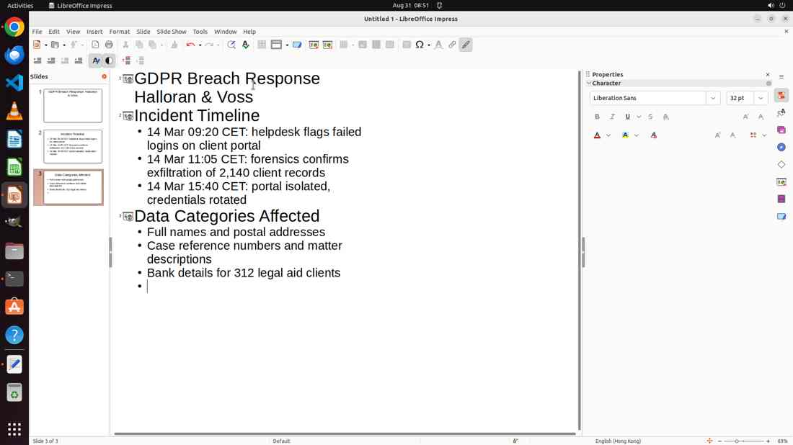
step 34 00:52:01
THINKINGNow I'm on a new bullet line. I'll promote it to title (shift+Tab), type "Regulator Contact", Return, Tab, then type 3 bullets. I'll batch all in one tool call now.
ACTIONNow I'll promote to a new slide and batch the full note 3 (heading + 3 bullets) in one tool call.
THINKINGNow it's a bullet under "Regulator Contact". Now I'll type the 3 bullets. Let me type them all with intervening Returns in a single tool call.
ACTIONNow I'll type note 3's three bullets in one batch.
TOOL CALL<tool_call>
<function=computer_use>
<parameter=action>
type
</parameter>
<parameter=text>
Lead authority: Irish Data Protection Commission
</parameter>
</function>
</tool_call>
EXECUTED (pyautogui in VM)pyautogui.typewrite("Lead authority: Irish Data Protection Commission")
step 39 00:53:09
THINKINGBullet 1 of note 3 done. Now the remaining two bullets. I'll batch: Return, type bullet2, Return, type bullet3. Then transition to note 4. Let me do the two bullets now.
ACTIONNow I'll add note 3's remaining two bullets.
EXECUTED (pyautogui in VM)pyautogui.press("return")
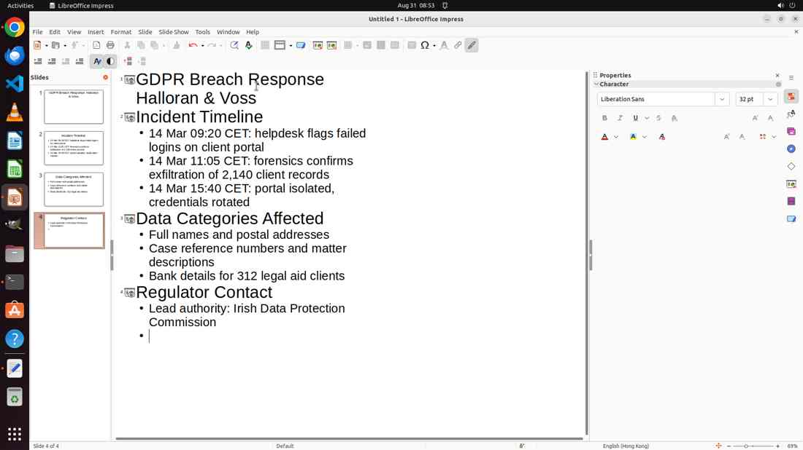
step 40 00:53:20
THINKINGNow on new bullet. I'll type bullet2 and bullet3 of note 3. I'll batch: type bullet2, Return, type bullet3. Then I need to transition to note 4. Let me batch bullet2 + bullet3.
TOOL CALL<tool_call>
<function=computer_use>
<parameter=action>
type
</parameter>
<parameter=text>
Draft Article 33 notification prepared by Marek Sobiczak
</parameter>
</function>
</tool_call>
EXECUTED (pyautogui in VM)pyautogui.typewrite("Draft Article 33 notification prepared by Marek Sobiczak")
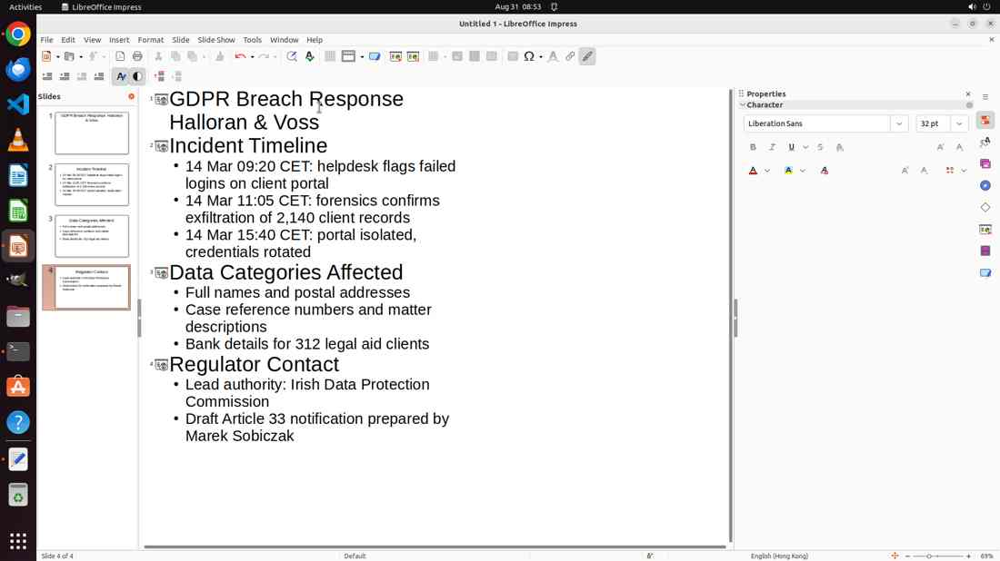
step 41 00:53:31
THINKINGNow the third bullet of note 3. Return, type bullet3. Then transition to note 4. Let me batch: Return, type bullet3.
EXECUTED (pyautogui in VM)pyautogui.press("return")
step 42 00:53:45
THINKINGNow I'll type the third bullet of note 3, then transition to note 4. Let me batch: type bullet3, Return, shift+Tab, type "Client Communication". Then note 4's bullets need Tab etc. Let me do type bullet3 first, then the rest in next call to keep verification.
Actually let me batch more now since pattern is proven: type bullet3, Return, shift+Tab, type "Client Communication", Return, Tab, then type note4's 3 bullets. That's a big predictable chunk. Let me do it all in one tool call.
ACTIONNow I'll batch note 3's final bullet and the entire note 4 (heading + 3 bullets) in one sequence.
TOOL CALL<tool_call>
<function=computer_use>
<parameter=action>
type
</parameter>
<parameter=text>
Outstanding: forensic root-cause annex from RedLine Security
</parameter>
</function>
</tool_call>
EXECUTED (pyautogui in VM)pyautogui.typewrite("Outstanding: forensic root-cause annex from RedLine Security")
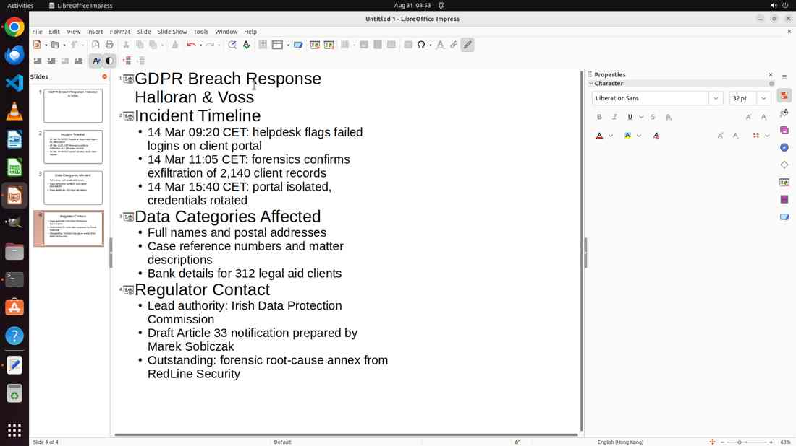
step 43 00:53:56
THINKINGNote 3 is complete. Now transition to note 4: Return, shift+Tab, type "Client Communication". Let me do Return first.
ACTIONNote 3 is complete. Now let me transition to note 4: new title line.
EXECUTED (pyautogui in VM)pyautogui.press("return")
step 44 00:54:13
THINKINGNow on a new bullet. I need to promote to title (shift+Tab) to create slide 5 for "Client Communication". Let me batch: shift+Tab, type "Client Communication".
ACTIONNow I'll promote to a new slide title and type note 4's heading.
EXECUTED (pyautogui in VM)pyautogui.hotkey("shift", "tab")
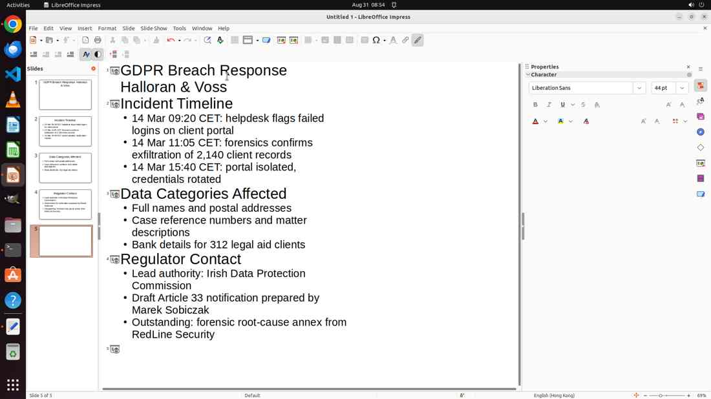
step 45 00:54:26
THINKINGSlide 5 title ready (44pt). Now type "Client Communication", then Return, Tab, then 3 bullets. Let me type the heading.
ACTIONSlide 5 title is ready. Let me type note 4's heading.
TOOL CALL<tool_call>
<function=computer_use>
<parameter=action>
type
</parameter>
<parameter=text>
Client Communication
</parameter>
</function>
</tool_call>
EXECUTED (pyautogui in VM)pyautogui.typewrite("Client Communication")
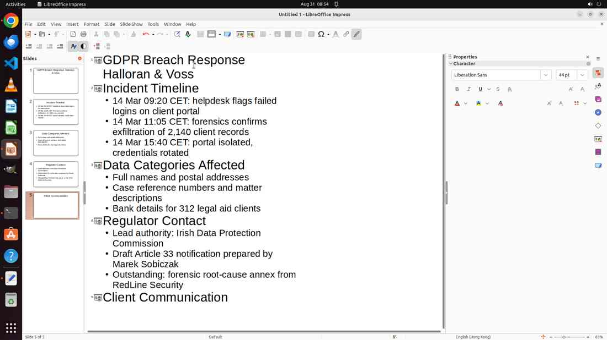
step 46 00:54:34
THINKING"Client Communication" is set as slide 5 title. Now add its 3 bullets: Return, Tab, bullet1, Return, bullet2, Return, bullet3. Let me do Return first, then Tab, then bullets.
ACTIONNow let me add note 4's bullets: Enter, Tab to demote.
THINKINGNow it's a bullet under "Client Communication" (back to 5 slides, 32pt). Now type the 3 bullets. I'll type bullet1, then Return, bullet2, Return, bullet3. Let me type bullet1.
ACTIONNow I'll type note 4's first bullet.
TOOL CALL<tool_call>
<function=computer_use>
<parameter=action>
type
</parameter>
<parameter=text>
Tiered letters: 312 high-risk clients by registered post
</parameter>
</function>
</tool_call>
EXECUTED (pyautogui in VM)pyautogui.typewrite("Tiered letters: 312 high-risk clients by registered post")
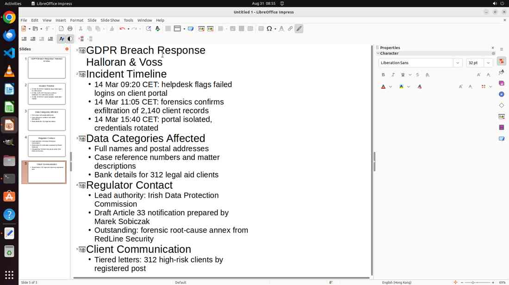
step 49 00:55:16
THINKINGBullet 1 of note 4 done. Now Return, bullet2, Return, bullet3. Let me do Return then bullet2.
EXECUTED (pyautogui in VM)pyautogui.press("return")
step 50 00:55:26
THINKINGNow type bullet2 of note 4, then Return, bullet3. Let me type bullet2.
TOOL CALL<tool_call>
<function=computer_use>
<parameter=action>
type
</parameter>
<parameter=text>
Remaining 1,828 clients by email, template approved by Ana Ferreira
</parameter>
</function>
</tool_call>
EXECUTED (pyautogui in VM)pyautogui.typewrite("Remaining 1,828 clients by email, template approved by Ana Ferreira")